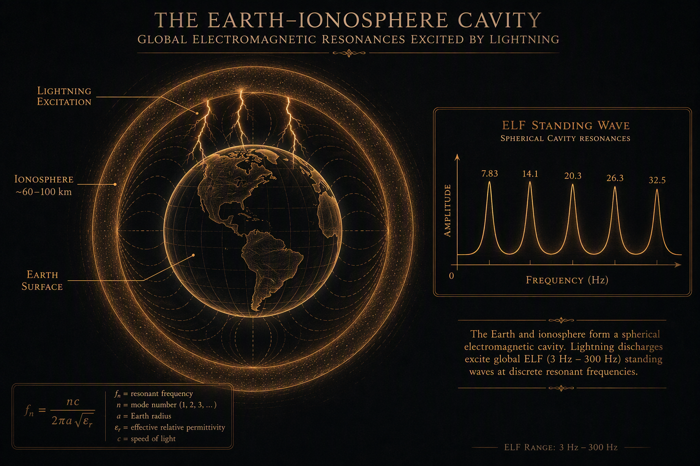
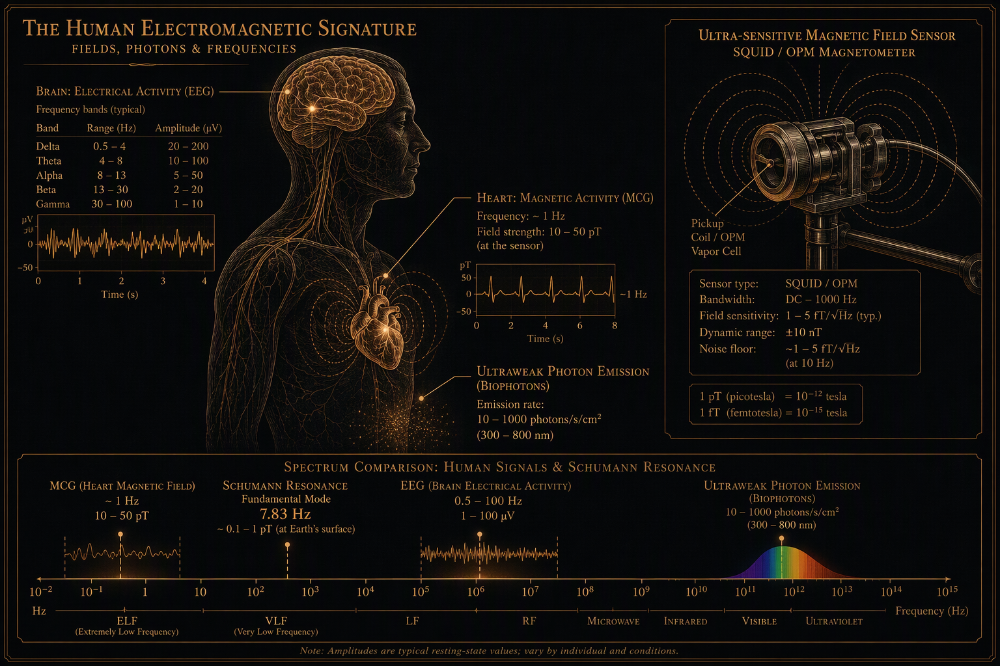
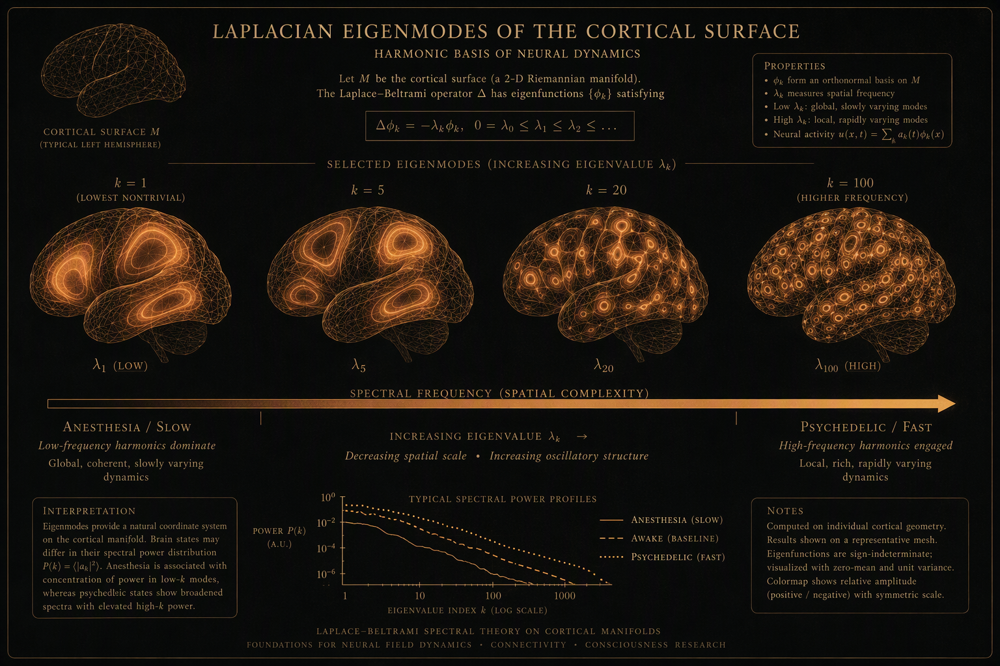

The Ringing Earth
The cavity and its modes Established

Winfried Otto Schumann predicted the modes in 1952; Balser and Wagner measured them in 1960. (G. F. FitzGerald had anticipated the idea in 1893.)1 The peaks sit near 7.83, 14.1, 20.3, 26.3, 32.5 Hz — emphatically not integer harmonics: the successive-mode spacings run 6.27, 6.2, 6.0, 6.2 Hz, mean ≈ 6.2 Hz, because cavity losses shift every peak below its ideal value fn = (c/2πa)·√(n(n+1)). The wellness-culture figures “14.3 / 20.8 / 27.3 / 33.8” are nominal conveniences.
The excitation is planetary weather: ~2,000 thunderstorms and ~50 lightning flashes per second, with three diurnal maxima tracking the tropical “chimneys” — Southeast Asia near 09 UT, Africa (strongest) near 14 UT, South America near 20 UT. Q-bursts correlate with sprites. The modes earn their keep as instruments: global lightning climatology, Williams’ 1992 “global tropical thermometer,” a water-vapor proxy (Price 2000), and lightning detection on Titan via Huygens. NASA’s interest is geophysical only; there is no biological-effects program.
How it is measured
The standard station pairs two horizontal magnetic induction coils with a vertical antenna, spanning 3–100 Hz. The signals are small: ~300 µV/m electric, ~1 pT magnetic — against Earth’s ~50 µT static field, the magnetic component is a whisper one fifty-millionth as loud. Stations at Tomsk, Lekhta, Nagycenk, and Arrival Heights keep continuous watch. Measuring the Schumann modes yourself is safe and cheap — an induction-coil magnetometer and an ADC; see experiment B1, which uses exactly this front end.
The Measurable Human
EEG, ECG, and the real resonance at 0.1 Hz Established

Hans Berger’s 1929 EEG remains the closest real object to a “human frequency”: 10–100 µV scalp potentials in named bands — delta 0.5–4, theta 4–8, alpha 8–13, beta 13–30, gamma ~30–100+ Hz. Note the character of the answer: a spectrum, state-dependent, spatially distributed — not a scalar.
The cardiac channel runs at ~1 Hz (ECG), 10–50 pT (magnetocardiography). Heart-rate variability is a genuine autonomic marker, and it contains a real resonance phenomenon: paced breathing near 0.1 Hz — six breaths per minute — maximizes HRV through the baroreflex (Vaschillo; Lehrer; 2020 meta-analysis). This is the honest core that HeartMath rebrands as “coherence”; their Global Coherence Initiative’s planetary claims extend beyond the data.2
Femtotesla fields, biophotons, and true spectroscopy
The gold-standard answer to “can we measure a person’s EM emissions” is MEG: brain magnetic fields of 50–500 fT, read by SQUIDs at 4 K in shielded rooms, or now by optically pumped magnetometers (SERF regime, 1–5 fT/√Hz) at room temperature; NV-diamond magnetocardiography has been demonstrated. These are real biofields at femtotesla scale — roughly 10⁶–10⁹× below Earth’s field — and nothing at any scale supports person-to-person field interaction.3
All tissue also emits ultraweak photon emission — ~10–10³ photons/s/cm² in visible/UV from excited triplet carbonyls and singlet oxygen. It is real, diagnostically promising (a brain-activity optical marker; photons along active nerves), and about a million times below visual threshold: “auras = biophotons” is a Category error. And the true “frequency of an object” is spectroscopy: NMR (¹H Larmor 42.6 MHz/T), ESR (~9.5 GHz at X-band), THz molecular fingerprints, mechanical natural frequencies — a spectrum under specified conditions, exactly as experiment B3 demonstrates.
Resonance in mainstream neuroscience Established method

Without any ELF mysticism, resonance mathematics has become load-bearing in the mainstream: stochastic resonance in neurons is fully established (Douglass 1993, Nature); Kuramoto coupled-oscillator models are the standard framework for whole-brain synchronization and disorders of consciousness; connectome harmonics — Laplacian eigenmodes of the structural connectome (Atasoy, Donnelly & Pearson 2016, Nature Communications) — track consciousness level, with anesthesia and psychedelics at opposite ends of a low-to-high-frequency gradient (Luppi 2023).4
The licensing rule that keeps this honest: resonance and harmonics language is licensed wherever there is a linear eigenmode decomposition of a measurable dynamical system — a specified operator, measurable modes, state-dependent projections — and forbidden wherever no system, operator, modes, or measurement is specified. Atasoy passes; “your frequency is low” fails every clause. At the edge sits General Resonance Theory (Hunt & Schooler 2019): consciousness as shared resonance of nested EM fields — explicitly panpsychist, legitimate philosophy with physics vocabulary, currently Untestable.5
The Schumann–EEG frontier Frontier
The correlational literature is real and worth stating fairly. Herbert König (Schumann’s successor) noted from 1954–74 that SR profiles resemble EEG alpha/beta and proposed a “zeitgeber” hypothesis. Pobachenko et al. (2006) reported real-time SR–EEG coherence in 6–16 Hz over six weeks, 15 subjects. Saroka, Vares & Persinger (2016, PLoS ONE) found the first three SR modes in some averaged QEEG spectra across 238 recordings from 184 subjects, with transient 200–300 ms “harmonic synchrony” epochs. HRV synchronization with solar/geomagnetic/SR indices has been reported over one month in 10 subjects (Timofejeva/McCraty 2017) and long-term (Alabdulgader 2018, Scientific Reports).6
Now the amplitude discipline this archive requires. The Schumann magnetic component is ~1 pT. The one positive controlled human magnetoreception study (Wang et al. 2019, eNeuro — alpha-band event-related desynchronization under rotating Earth-strength fields, polarity-sensitive, ruling out cryptochrome, implicating magnetite) used fields of ~50 µT — seven orders of magnitude stronger — and remains unreplicated.7 No candidate transducer — radical-pair chemistry, magnetite torque, ephaptic coupling — is known to operate at picotesla ELF against kT-dominated neuronal noise. The coupling is not merely unproven; it is mechanism-free at the relevant amplitude. Hence experiment B1 is designed as a bound-setting null measurement, with preregistration and a promised publication either way.
Wever’s bunker experiments, for the record, are real: subjects shielded underground at Erling-Andechs (Max Planck, 1960s–70s) free-ran circadianly, and a weak ~10 Hz field partially restored entrainment. But “astronauts sicken without Schumann; spacecraft carry Schumann simulators” is wellness lore without documentary basis.
The Fringe Ledger
Four marketing scales, audited
| System | The claim | The audit | Grade |
|---|---|---|---|
| Bruce Tainio MHz scale (1992) | Healthy body 62–78 MHz; disease 58 MHz; cancer 42 MHz; essential oils 52–320 MHz; negative thoughts −12 MHz. | The BT3 device was never validated; MHz emissions at these intensities do not exist biologically; the scale circulates only in aromatherapy marketing. | Refuted |
| David Hawkins Map of Consciousness | Emotions and states numbered 20–1000 (Shame 20, Love 500), read by applied kinesiology. | Applied kinesiology lacks reliability and validity in reviews; no instrument exists. | Refuted |
| Rife frequencies (1930s) | A “mortal oscillatory rate” per pathogen; beam-ray devices cure by resonance. | No controlled evidence; FDA prosecuted; deaths from forgone treatment on the ledger. | Refuted |
| Solfeggio frequencies (396–852 Hz) | Ancient sacred scale; 528 Hz “repairs DNA.” | Constructed in the 1970s by Puleo via numerology on the Book of Numbers, popularized by Horowitz 1999; no musicological link to Gregorian chant; the DNA claim traces to a 1988 Glen Rein experiment that did not test 528 Hz and was never replicated. | Refuted |
The one-line summary, posted wherever this archive uses the word frequency in a metaphysical context: a human has spectra, not a scalar — EEG/MEG/ECG/UPE/spectroscopy measure them honestly; every scalar “MHz of the body” or “consciousness number” on the market is instrumentation-free numerology.
The 432 Hz nuance Cosmology refuted Pitch effect real
The conspiracy genealogy — 440 Hz imposed by Goebbels or the Rockefellers as mind control — is folklore; historical concert pitch ranged 400–460 Hz, Verdi’s 432 advocacy was practical, and 440 arrived via Stuttgart 1834, the ASA in 1936, and ISO 16 in 1955.8
But the debunk overshoots if it claims no data exist. Small double-blind and crossover trials (Calamassi & Pomponi 2019; emergency nurses 2022; dental anxiety 2020; root canal 2025) show music relaxes robustly — 104-RCT meta-analytic support — with at most a slight HR/BP advantage at 432 Hz. That is a psychoacoustic pitch effect, not cosmology, and the trials are small, single-center, and high-bias-risk. The honest sentence is: specific 432 Hz superiority is not established; the claim that 432 Hz is “the frequency of the universe” is refuted; the claim that it sounds slightly more relaxing to some listeners is an open, small-effect question.
- Schumann, Z. Naturforsch. A 7:149 (1952); Balser & Wagner, Nature 188:638 (1960), nature.com/articles/188638a0. ↩
- Vaschillo & Lehrer resonance-frequency breathing literature; 2020 HRV-biofeedback meta-analysis. HeartMath Global Coherence Initiative: claims extend beyond data. ↩
- SQUID biomagnetism 1–5 fT/√Hz; SERF OPMs; NV-diamond MCG. Reviews: Cifra & Pospíšil (2014) on ultraweak photon emission. ↩
- Douglass et al., Nature 365:337 (1993), nature.com/articles/365337a0; Atasoy, Donnelly & Pearson, Nat. Commun. 7:10340 (2016), doi.org/10.1038/ncomms10340; Luppi et al., Commun. Biol. (2023). ↩
- Hunt & Schooler, “The Easy Part of the Hard Problem: A Resonance Theory of Consciousness,” Front. Hum. Neurosci. 13:378 (2019), doi.org/10.3389/fnhum.2019.00378. ↩
- Saroka, Vares & Persinger, PLoS ONE 11:e0146595 (2016), doi.org/10.1371/journal.pone.0146595; Pobachenko et al. (2006); Timofejeva/McCraty et al., IJERPH (2017); Alabdulgader et al., Sci. Rep. 8:2663 (2018); Cherry, Natural Hazards 26:279 (2002). ↩
- Wang et al., “Transduction of the Geomagnetic Field as Evidenced from Alpha-band Activity in the Human Brain,” eNeuro (2019), doi.org/10.1523/ENEURO.0483-18.2019. Unreplicated as of 2026. ↩
- ISO 16:1975 (standard tuning pitch); Calamassi & Pomponi, “Music Tuned to 440 Hz Versus 432 Hz and the Health Effects,” double-blind crossover (2019). Conspiracy framing documented by Middlebury CTEC. ↩